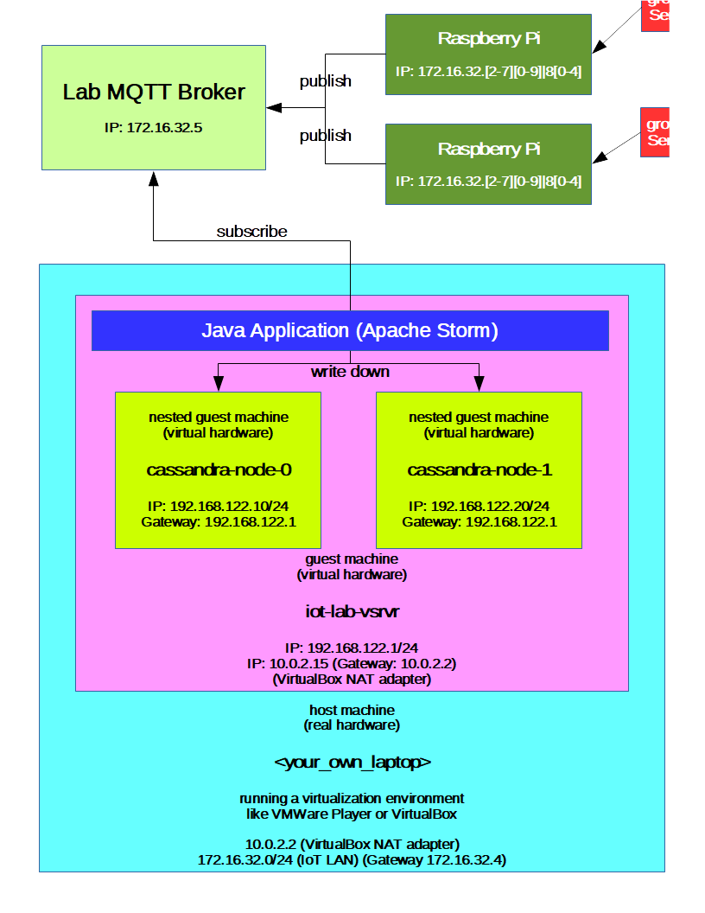

04 - Cassandra¶
Introduction¶
In this lab we are going to have a closer look at Cassandra, a database engine which was designed for high availability and scalability. To achieve these goals the databases on the cassandra engine are distributed on any desired nodes. The Cassandra engine focuses upon a decentralized architecture. We build a simple cluster, create a table and modify data by using the Cassandra Query Language (CQL).
Further on we will have a quick look at the cqlsh, establish a connection to our Cassandra cluster and run simple read and write queries against the Cassandra database. We then examine an application architecture with whose we are able to handle request storms, in our case from an MQTT broker and write down data to a replicated database like Cassandra.
Prerequisites¶
Hardware with following key specifications
>= 8 GB of RAM recommended
4 Cores / 8 CPUs (Hyperthreading) recommended
Virtualization supported by the CPU (VT-x/AMD-V) would be a big plus.
At least 32 GiB of free disk space to place the virtual disk image of the guest machine.
Virtualization environment (VMWare Player / VirtualBox)
(Lab was developed using VirtualBox https://www.virtualbox.org/)Virtual harddisk image (hostname: iot-lab-vsrvr) provided by this lab.
Get it from inside of the lab subnet (net: 172.16.32.0/24)
At least 1 Raspberry Pi to submit data to a MQTT broker
raspbian operating system
Getting started¶
Environment overview¶

Alternate environment setup¶
If you are outside of the IoT subnet (172.16.32.0/24), and dont’t have access to the lab broker, you can start the mosquitto broker on the iot-lab-vsrvr by invoking the command: sudo service mosquitto start. Remember that in this case you have to change the virtual machine’s network adapter to a “Bridged Adapter”, so that <your_own_laptop>, the iot-lab-vsrvr and your Raspberry Pi’s reside in the same subnet.
Setting up the guest machine “iot-lab-vsrvr”¶
Get the virtual hard disk image from inside of the lab subnet (172.16.32.0/24) via:
ftp://jupiter.lab.iot/shared/IoT/p4
FTP-User: iotro
FTP-Password: iotro
You can download the image from outside the ZHAW LAN as well. It is also hosted on Switch Drive and is accessible through the following URL: https://drive.switch.ch/index.php/s/Vqis1eTZ1CS8f2s
Uncompress the virtual harddisk image … this may take a little, time for a coffee break.
Set up a virtual machine on your virtualization environment and use the virtual disk image, you just downloaded (it is a 32 bit debian system). Recommended are the following settings:
4 GiB of RAM
2 or 4 CPUs (Just one single core will not work)
Enable PAE/NX (on VirtualBox)
Enable VT-x/AMD-V
Network adapter in NAT mode
(or a bridged adpter if you use the alternate environment setup)
Start the virtual machine. On the virtual machine with the hostname iot-lab-vsrvr you can operate with these credentials:
Username |
Password |
is sudoer? |
|---|---|---|
iotusr |
iotlab |
yes |
root |
iotlab |
yes (root user) |
Apache Cassandra¶
In this section we are going to set up a Cassandra cluster with a very trivial configuration, on two virtual nodes which run on the iot-lab-vsrvr, cassandra-node-0 and cassandra-node-1. Later on we use the cqlsh to get in touch with the CQL language and run simple queries against the distributed database.
Introduction¶
Architecture Overview¶
Some key features of a Cassandra database system are listed below:
Cassandra was designed with the understanding that system/hardware failures can and do occur
Peer-to-peer, distributed system
All nodes the same (No master-slave architecture or anything similar)
Data partitioned among all nodes in the cluster
Custom data replication to ensure fault tolerance
Read-/Write-anywhere design
Each node communicates with each other through the Gossip protocol, which exchanges information across the cluster every second
A commit log is used on each node to capture write activity. Data durability is assured.
Data also written to an in-memory structure (memtable) and then to disk once the memory structure is full (an SStable)
A keyspace is akin to a database in the RDBMS table but is more flexible/dynamic
6A row in a column family is indexed by its key. Other columns may be indexed as well.
Source: http://www.slideshare.net/DataStax/an-overview-of-apache-cassandra
In our installation we are going to use a basic setup and only two nodes to replicate our databases:
Which means that we can run queries against arbitrary nodes in the Cassandra cluster and all the changes are replicated all over the cluster. As you can see, Cassandra builds a ring structure including all its available nodes.
Snitches¶
A snitch determines which data centers and racks are written to and read from. Snitches inform Cassandra about the network topology so that requests are routed efficiently and allows Cassandra to distribute replicas by grouping machines into data centers and racks. All nodes must have exactly the same snitch configuration. Cassandra does its best not to have more than one replica on the same rack (which is not necessarily a physical location).
Note: If you change the snitch after data is inserted into the cluster, you must run a full repair, since the snitch affects where replicas are placed.
Snitch types Cassandra supports:
Dynamic snitching
Monitors the performance of reads from the various replicas and chooses the best replica based on this history.SimpleSnitch
The SimpleSnitch is used only for single-data center deployments.RackInferringSnitch
The RackInferringSnitch determines the location of nodes by rack and data center.PropertyFileSnitch
Determines the location of nodes by rack and data center.GossipingPropertyFileSnitch
Automatically updates all nodes using gossip when adding new nodes and is recommended for production.Ec2Snitch
Use with Amazon EC2 in a single region.EC2MultiRegionSnitch
Use this snitch for deployments on Amazon EC2 where the cluster spans multiple regions.
Source: http://docs.datastax.com/en/cassandra/1.2/cassandra/architecture/architectureSnitchesAbout_c.html
In our simple architecture with only 2 nodes in 1 “datacenter” we use a SimpleSnitch as endpoint snitch, which is sufficient for this purpose. In the configuration file this is the default and doesn’t have to be changed.
If you want to go in deep an explore all the configuration possibilites and setup concepts of a Cassandra cluster e.g. a distributed cluster over many datacenters, etc. you can do so by consulting the Datastax Documentations: http://docs.datastax.com/en/index.html
Installation¶
To install the cassandra cluster we operate as the user iotusr on the “iot-lab-vsrvr”.
As you have started your iot-lab-vsrvr in a previous section, one can open a terminal and cd in the labs directory: cd /home/iotusr/IoT/p4
We first have to create a virtual switch in NAT mode to build our own subnet which has also an uplink to the outside world.
To get the environment on the iot-lab-vsrvr like pictured above invoke the bash script:
sudo ./start_cassandra_env.bash
To control the virtual cassandra nodes, you can use the virsh tool and the following commands:
Command |
Descripütion |
|---|---|
sudo virsh list |
list machines and their state |
sudo virsh create <machine_xml_file> |
create and start a virtual machine specified in <machine_xml_file> |
sudo virsh reboot |
reboot specified machine by its machine id |
sudo virsh shutdown |
shutdown specified machine by its machine id |
visrsh provides many more options. For a verbose description of all of them, consult the manual pages: man virsh
Now that the Cassandra nodes are running try to login from the iot-lab-vsrvr:
Credentials:
Hostname |
IP address |
Username |
Password |
|---|---|---|---|
cassandra-node-0 |
192.168.122.10 |
root |
iotlab |
cassandra-node-1 |
192.168.122.20 |
root |
iotlab |
ssh <Username>@<IP address>
Due to simplicity we always act as root user on the Cassandra database nodes in this lab. Never do this in a productive environment. For example you can create a specific application user.
On each Cassandra node the Cassandra application package is already downloaded. To build a simple cluster with our two nodes, we have to define a seed node and another normal node.
Let’s start with the configuration of the seed node:
Login via ssh to the Cassandra node with the IP address 192.168.122.10, this is our seed node:
cd /usr/local/bin
tar xvf apache-cassandra-2.1.11-bin.tar.gz
cd apache-cassandra-2.1.11/conf
vim cassandra.yaml
Now we can edit the configuration file:
starting characters of line |
actual value |
new value |
|---|---|---|
cluster_name |
‘Test Cluster’ |
‘iotLabCassandraCluster’ |
- seeds |
“127.0.0.1” |
“192.168.122.10” |
listen_address |
localhost |
192.168.122.10 |
rpc_address |
localhost |
192.168.122.10 |
Where:
rpc_address is the address on which Cassandra listens to the client calls like CQL queries.
listen_address is the address on which Cassandra listens to the other Cassandra nodes in the cluster.
In productive environments it is an optimization to have different ineterfaces/subnets for syncronizing the cassandra nodes and process CQL queries from applications or db admins.
Now let things roll:
cd ..
bin/cassandra
The node should now start up. This may take a while. Wait until you see a message on your console like:
INFO 19:01:40 No gossip backlog; proceeding
The seed node is now started. Now open another terminal on iot-lab-vsrv and repeat the whole configuration procedure for the other Cassandra node with the IP address: 192.168.122.20. Keep in mind to use the correct IP addresses and specify the right seed node (192.168.122.10).
If everything worked flawlessly, open two other terminals on “iot-lab-vsrv” and connect to the two cassandra nodes as root via ssh and type:
/usr/local/bin/apache-cassandra-2.1.11/bin/nodetool status
A sample output would be:
Datacenter: datacenter1
=======================
Status=Up/Down
|/ State=Normal/Leaving/Joining/Moving
-- Address Load Tokens Owns (effective) Host ID Rack
UN 192.168.122.10 51.65 KB 256 100.0% 52ae0bff-9b6a-4020-b78a-e6175f6aa8f8 rack1
UN 192.168.122.20 66.06 KB 256 100.0% f78bafe4-558e-473e-8137-2165337dda39 rack1
UN stands for Up Normal which means your node runs as expected and no serious errors were reported during the startup.
Get in touch with the cqlsh and CQL¶
To run database queries we use the CQL shell (cqlsh), which comes with the Cassandra installation package. The sample queries we run from the host iot-lab-vsrv.
Open a terminal on the iot-lab-vsrv and make sure that you are in your ~ directory (/home/iotusr).
Start the cqlsh by typing: ./cqlsh -C 192.168.122.[12]0 9042
It doesn’t matter if you connect to node 0 or node 1.
(To get more information about the cqlsh, type ./cqlsh -help)
As you may have noticed, we connected to the database without any authentication. Again, NEVER EVER do this in productive environments.
If you want to harden your Cassandra cluster by enabling and configuring security settings / adding users / alter passwords / … you may find a good entry point to this topic at: http://www.datastax.com/dev/blog/a-quick-tour-of-internal-authentication-and-authorization-security-in-datastax-enterprise-and-apache-cassandra
Now lets run a few simple queries against our Cassandra cluster from the cqlsh. In most cases we call pre-written scripts. These are located in the ~ directory of the user iotusr on the iot-lab-vsrvr.
If you want to use further CQL statements e.g. in your application later on you can always consult an up to date CQL documentation at: http://docs.datastax.com/en/cql/3.1/cql/cql_intro_c.html
Keyspaces¶
Keyspaces are analogous to databases as you know it from classic relational database engines.
Lets create one, named firstiot. In the cqlsh type: SOURCE 'create_keyspace.cql' and hit enter.
This will create a keyspace with the replication factor 2. The replication factor you define for a keyspace should never exceed the amount of nodes you run in a cluster. We use a SimpleStrategy for replication which is sufficient for a single datacenter. Study the script ‘create_keyspace.cql’.
Table creation¶
To create our first table in the keyspace “firstiot” you can run the script by typing the following in the cqlsh: SOURCE 'create_table.cql'
Study the script ‘create_table.cql’.
To work on the keyspace firstiot type: USE firstiot;
Let’s see if our table has been created as expected:
DESCRIBE TABLES;
DESCRIBE TABLE sen_logging;
Inserting data¶
To create our first dataset in our table sen_logging you can run the script by typing the following in the cqlsh: SOURCE 'insert_data.cql'
Study the script ‘insert_data.cql’.
Unfortunately our version of the cqlsh does not support UTF-8 characters with a width of more than one byte, when passing queries via a cql file. As you can see, we are able to smash this bug by the use of the function blobAsText() and pass a binary representation of the UTF-8 text string we want to insert into the specific varchar column.
To check if our data record was inserted correctly, we can perform a select statement on our table:
USE firstiot;
SELECT * from sen_logging;
Deleting data¶
To delete the previously inserted data record you can invoke the following commands in the cqlsh:
USE firstiot;
DELETE from sen_logging WHERE client_id = '<client_id>';
Check if the table is blank again:
SELECT * from sen_logging;
Store the data provided by the Raspberry Pi’s¶
In this section we are going to modify the the well known application from the previous lab (MQTT) to publish data via a broker to an apache storm application, where the data is being written down to our cassandra cluster.
Provide data from the Raspberry Pi¶
To generate some data that can be written down to our Cassandra cluster, let’s add a RandomSpammer class which does excatly this task.
Download the MQTT_thing-rg-0.2-dbg.zip and study the code. The thread of this class should generate any data and publish it to a broker, just the way the TimeResource did in lab 3.
The data should be published as message in SenML. To check if the random generator works correctly launch the application on your Raspberry Pi and subscribe to the given topic with a console tool, e.g.:
mosquitto_sub -h 172.16.32.5 -t iot/labs/04/randomspammer -v
You may have noticed that all Raspberry Pis publish to the same topic. To distinguish which device published a message the hardware address is published within the payload too (key: bn). Be sure, the hardware address of your Raspberry Pi appears in the subscribed messages.
Sensor Markup Language – SenML¶
In short, the sensor markup language specifies, how recorded data from a sensor can be structured. The whole specification is available at: https://tools.ietf.org/html/draft-jennings-core-senml-02
To format the messages we use the JSON representation of SenML. The base object variables have the following structure:
+------------+------+--------+
| SenML | JSON | Type |
+------------+------+--------+
| Base Name | bn | String |
| Base Time | bt | Number |
| Base Units | bu | Number |
| Version | ver | Number |
+------------+------+--------+
Further on there are measurement or parameter entries which represent as follows:
+---------------+------+----------------+
| SenML | JSON | Notes |
+---------------+------+----------------+
| Name | n | String |
| Units | u | String |
| Value | v | Floating point |
| String Value | sv | String |
| Boolean Value | bv | Boolean |
| Value Sum | s | Floating point |
| Time | t | Number |
| Update Time | ut | Number |
+---------------+------+----------------+
An example about how the random data could be formatted:
{
"bn": "b8:27:eb:f5:bf:53",
"e": [{"t": "1477672722000", "n": "iot/labs/04/randomspammer", "u": "C",
"sv": "520"}]
}
To deal with JSON, we use the json module which comes with the defalut libraries of a python interpreter installation.
A basic Code snippet from the json module, which creates a json structure like the pictured above:
'''
Mapping Python/JSON "Types"
JSON Python
============================
object dict
array list
string str
number (int) int
number (real) float
true True
false False
null None
'''
random_data = { }
sensor_list = [ ]
measurement = { }
random_data[ 'sv' ] = value
random_data[ 't' ] = timestamp
random_data[ 'u' ] = unit
random_data[ 'n' ] = self.pub_topic
sensor_list.append( random_data )
measurement[ 'e' ] = sensor_list
measurement[ 'bn' ] = self.client_id
return json.dumps( measurement, sort_keys = False )
Process received data with Apache Storm¶
Apache Storm is a free and open source distributed realtime computation system. Storm makes it easy to reliably process unbounded streams of data, doing for realtime processing. Storm is simple, can be used with any programming language, and is a lot of fun to use!
Source: http://storm.apache.org/
In this last section of the lab, we do have a quick look at the Apache Storm framework. We use it to write the data published by the Raspberry Pi’s to our previously set up Cassandra cluster.
Architecture Overview¶
On the iot-lab-vsrvr there is a version of the JDK and eclipse installed (icon on the desktop). Open it and choose the pre-selected workspace. Study the application iot_lab4_mqtt-storm. It’s implemented like pictured above. We assume, our Randomspammer delivers temperature data in different units (°C, °F, °K).
Therefore we set up 1 temperature spout, which has 4 bolts available to process data. How the bolts are chained to achieve the workflow pictured above is visible in the class TemperaturSpout. You have also the possibility to define multiple worker threads for each bolt, e.g. if you expect much more temperature data whose temperature unit is °K.
builder.setBolt( "temperatureKelvinBolt",
new TemperatureKelvinBolt(), 1 )
.shuffleGrouping( "temperature" );
In our sample application we use 1 worker thread for each bolt, which is sufficient for this topic. You can now start the application iot_lab4_mqtt-storm: Right click on the MQTTTopology class > Run As > 2 Java Application. If you want just your own random messages change the topic name to an individual name, other than “iot/labs/04/randomspammer”.
Deploy the sample RandomSpammer (MQTT_thing-rg-0.2-dbg.zip) project to your Raspberry Pi and start it. If you want just your own random messages change the topic name to an individual name, other than iot/labs/04/randomspammer.
We have now a running environment with the following components:
Cassandra database cluster on cassandra-node-0 and cassandra-node-1
At least 1 Raspberry Pi which acts as random data publisher
MQTT broker
Apache Storm powered application which acts as subscriber and writes the published data to our keyspace firstiot into the table sen_logging.
To check if the random sensor data from the Raspberry Pi RandomSpammer are written correctly to the Cassandra cluster open a cqlsh on the machine iot-lab-vsrvr and run some select statements against the database, e.g.:
./cqlsh -C 192.168.122.10 9042
SELECT * FROM firstiot.sen_logging;
If you still have time and energy, customize the applications and try to log data from components of your choice that you have attached to your grovePi board.
Grading¶
3 points maximum will be awarded for completion of the exercises.